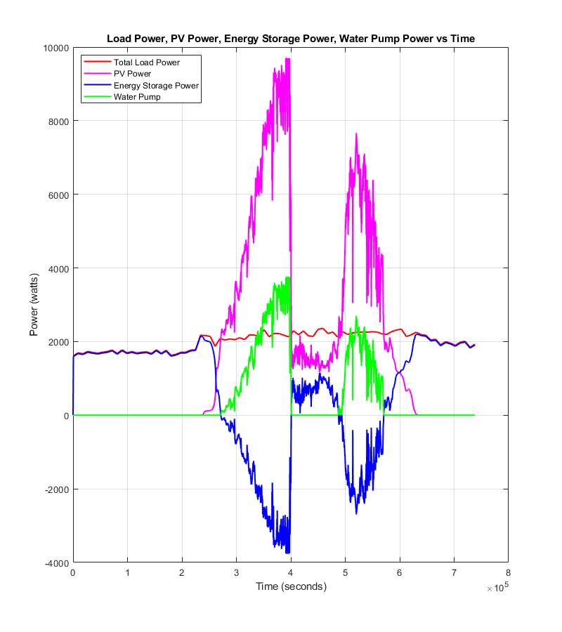
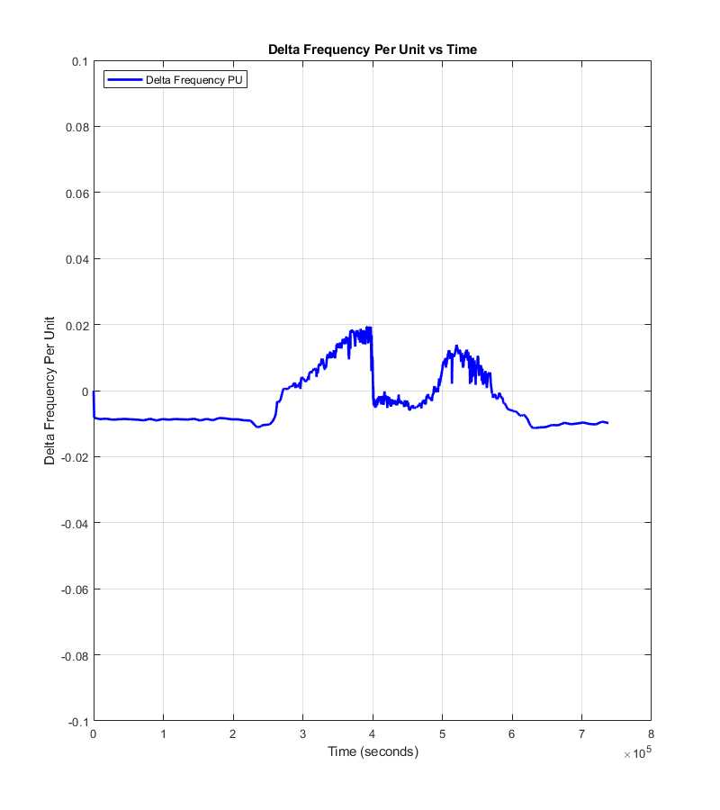
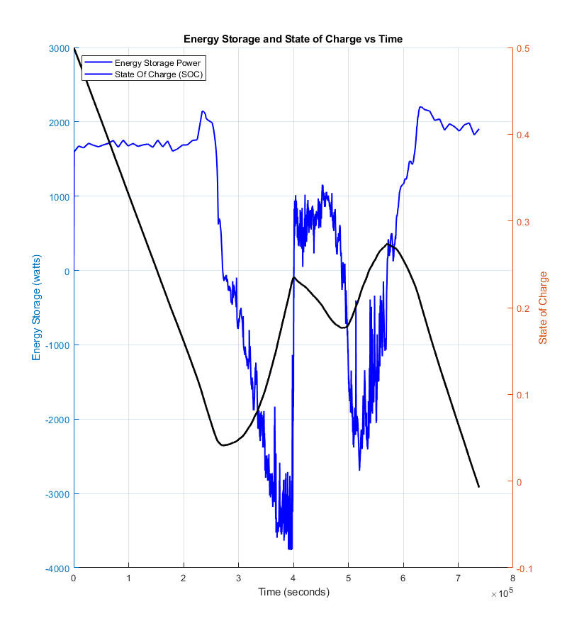

Contents
Microgrid Simulation
Created: ECE 530 class of fall 2024
%clc %close all % close figure windows %clear %format compact
Simulation settings
simu.endTime = 60*60*20.5; %60*60*24;
simu.maxStepSize = 1e-1;
Data
load windspeedtimeseries load loadtimeseries load illuminationcurrenttimeseries load illuminationcurrenttimeseries_clouded meanWindSpeed = 8; maxWindSpeed = 15; meanLoadPower = 1.98e3; % Average Load maxLoadPower = 2.36e3; % Peak Load maxIlluminationCurrent = 10; % 10 is fully sunny day % Scaling windspeedtimeseries.Data = fn_scaling(... meanWindSpeed*windspeedtimeseries.Data,meanWindSpeed,maxWindSpeed); loadtimeseries.Data = fn_scaling(... loadtimeseries.Data,meanLoadPower,maxLoadPower); % illuminationcurrenttimeseries.Data = ... % illuminationcurrenttimeseries.Data*maxIlluminationCurrent/max(illuminationcurrenttimeseries.Data); % Contingency Condition: Cloudy Day illuminationcurrenttimeseries.Data = ... illuminationcurrenttimeseries_clouded.Data*maxIlluminationCurrent/max(illuminationcurrenttimeseries_clouded.Data);
Equation solved. fsolve completed because the vector of function values is near zero as measured by the value of the function tolerance, and the problem appears regular as measured by the gradient. Equation solved. fsolve completed because the vector of function values is near zero as measured by the value of the function tolerance, and the problem appears regular as measured by the gradient.
Wind Turbine Parameters
wt.N_turbines = 1; wt.rho = 1.2; % Density of air kg/m^3 % XANT 100 kW wt.Pgen_rated = 100e3; wt.Cfric = 0.01*100e3/6^2; % Nm/(rad/s) B*6^2 = 0.01*100e3 wt.bladeLength = 11; wt.bladeWeight = 1000; % From http://windpower.sandia.gov/other/041605C.pdf wt.J = 3*1/3*wt.bladeWeight*wt.bladeLength^2; % Missing generator, gearbox, shaft, etc... wt.A = pi*wt.bladeLength^2; wt.w_0 = 0; % Cp curve modeling % lambdaai = 1/( (1/(lambda+0.08*beta)) - 0.035/(beta^3+1) ) % cp = c1*(c2/lambdaai-c3*beta-c4)*exp(-c5/lambdaai) + c6*lambda plot_cp = 0; if plot_cp wt.c = [ 0.5176 116 0.4 5 21 0.0068 ]; figure lambda = [0:0.1:13]; for beta = [0:5:30]; lambdaai = 1./(1./(lambda+0.08*beta) - 0.035./(beta.^3+1)); cp = wt.c(1)*(wt.c(2)./lambdaai - wt.c(3)*beta - wt.c(4)) .* exp(-wt.c(5)./lambdaai) + wt.c(6)*lambda; hold on plot(lambda,cp) hold off end axis([0 13 0 0.5]) xlabel('lambda (tip speed ratio)') ylabel('Cp') end % From Cp(lambda) plot wt.lambda_opt = 8.1; wt.Cp_opt = 0.48; % Region 2 and 3 boundary -> rated rotational speed and wind speed wt.u_rated = (wt.Pgen_rated/(wt.Cp_opt*0.5*1.2*wt.A))^(1/3); % P_rated = Cp_max*0.5*A*bladeLength*u_rated^3 wt.w_rated = wt.lambda_opt*wt.u_rated/wt.bladeLength; wt.Tgen_rated = wt.Pgen_rated/wt.w_rated; wt.pitchctrl.kp = 1; wt.pitchctrl.ki = 0.1; wt.pitchctrl.upperLimit = 1; wt.pitchctrl.lowerLimit = 0;
Solar
% Parameters based on SolarWorld 300 module % 300 W panel, 60 cells, 5 W per cell % Open circuit voltage of 40 V (0.66 V per cell) % Short circuit current of 9.83 A % Maximum power point at 32.6 V (0.54 V per cell) and 9.31 A pv.P_rated = 9.7e3; % Homer Output pv.Is = 1e-10; % Produces about 0.66 V at 9.8 A of current pv.Rs = 0.0001; % Adjusting down increased power by up to 8%. pv.Rp = 2500; % Based off of L. Ma et al. "The Measurement of Series and Shunt Resistances of the Silicon Solar Cell Based on LabVIEW" pv.VT = 0.026; pv.vd_0 = 0.7; pv.MPPT_sampleTime = 1; % LEFT at ONE SECOND
Energy Storage
es.eta_pe = 0.95; es.eta_sm = sqrt(0.9); es.SOC_0 = 0.5; es.P_pe_rated = 25.3e3; % Homer Output es.P_pe_rated = pv.P_rated; % To address insufficiency power of converter es.P_pe_slew_upper = es.P_pe_rated / 1; es.P_pe_slew_lower = -es.P_pe_rated / 1; es.E_rated_kWh = 30.7; % SEE REPORT SUMMARY es.E_rated = es.E_rated_kWh*1000*3600; es.P_rated = es.P_pe_rated;
Microgrid
mg.H = 5; mg.D = 1; mg.P_base = maxLoadPower; mg.wpu_0 = 1; mg.X = 0.05; es.Kgpri = 20; ht.Kgpri = 20; ht.Kgsec = 20/60;
Hydro
ht.P_rated = 5; % Homer Output % Parameters for Hills Creek Reservoir unit ht.tauw = 1.6; ht.q_0 = 0.1; ht.beta = 10; ht.powercontroller.kp = 1.5/20; % Divide by 20 to account for droop ht.powercontroller.ki = 0.3/20; ht.powercontroller.kd = 0.55/20; ht.powercontroller.int_0 = 0.1; ht.powercontroller.kt = 1; ht.powercontroller.Td = 0.05; ht.powercontroller.lowerLimit = 0; ht.powercontroller.upperLimit = 1; ht.servo.tau = 0.35; ht.servo.kg = 3; ht.servo.speedUpperLimit = 0.077; ht.servo.speedLowerLimit = -0.077; ht.servo.posUpperLimit = 1; ht.servo.posLowerLimit = 0.05; ht.servo.initPos = 0.1;
Water Pump (Deferrable Load)
wp.P_rated = pv.P_rated; wp.height = 40; wp.P_upper = wp.P_rated; wp.P_lower = 0; wp.P_upperRate = wp.P_rated/10; wp.P_lowerRate = -wp.P_upperRate; wp.Kgpri = 20;
simresults = sim("microgrid_y24f_step10"); % ADDED to access data loggedData = simresults.logsout; % ADDED to access data p_ld = loggedData.get('p_ld').Values.Data; % load p_pv = loggedData.get('p_pv').Values.Data; p_es = loggedData.get('p_es').Values.Data; %p_ht = loggedData.get('p_ht').Values.Data; p_wp = loggedData.get('p_wp').Values.Data; % water pump - Deferrable load soc = loggedData.get('SOC').Values.Data; delta_wpu = loggedData.get('delta_wpu').Values.Data; x_time = 1:length(soc); figure(1); plot(x_time, p_ld, 'r-', 'LineWidth', 1.5); hold on; plot(x_time, p_pv, 'm-', 'LineWidth', 1.5); plot(x_time, p_es, 'b-', 'LineWidth', 1.5); plot(x_time, p_wp, 'g-', 'LineWidth', 1.5); %plot(x_time, p_ht, 'k-', 'LineWidth', 1.5); ylabel('Power (watts)'); hold off; set(gcf, 'Position', [1550, 50, 800, 900]); xlabel('Time (seconds)'); title('Load Power, PV Power, Energy Storage Power, Water Pump Power vs Time'); legend('Total Load Power', 'PV Power','Energy Storage Power', 'Water Pump'); % Add legend legend location northwest grid on;
Warning: Model
'<a href="matlab:open_system ('microgrid_y24f_step10')">microgrid_y24f_step10</a>'
contains 1 algebraic
loops.
Suggested Actions:
• Highlight and view
information about the
algebraic loops in
the model using the
Simulink.BlockDiagram.getAlgebraicLoops
function. - <a href="matlab:Simulink.BlockDiagram.getAlgebraicLoops('microgrid_y24f_step10');">Open</a>
• Suppress this
diagnostic by setting
the 'Algebraic Loop'
diagnostic parameter
to 'none'. - <a href="matlab:set_param('microgrid_y24f_step10','AlgebraicLoopMsg', 'none');">Fix</a>
Found algebraic loop that contains:
<a href="matlab:open_and_hilite_hyperlink ('microgrid_y24f_step10/pv/Sum4','error')">microgrid_y24f_step10/pv/Sum4</a>
<a href="matlab:open_and_hilite_hyperlink ('microgrid_y24f_step10/pv/Gain3','error')">microgrid_y24f_step10/pv/Gain3</a>
<a href="matlab:open_and_hilite_hyperlink ('microgrid_y24f_step10/pv/Sum2','error')">microgrid_y24f_step10/pv/Sum2</a>
<a href="matlab:open_and_hilite_hyperlink ('microgrid_y24f_step10/pv/Gain1','error')">microgrid_y24f_step10/pv/Gain1</a>
<a href="matlab:open_and_hilite_hyperlink ('microgrid_y24f_step10/pv/Math Function','error')">microgrid_y24f_step10/pv/Math Function</a>
<a href="matlab:open_and_hilite_hyperlink ('microgrid_y24f_step10/pv/Sum3','error')">microgrid_y24f_step10/pv/Sum3</a>
<a href="matlab:open_and_hilite_hyperlink ('microgrid_y24f_step10/pv/Gain2','error')">microgrid_y24f_step10/pv/Gain2</a>
<a href="matlab:open_and_hilite_hyperlink ('microgrid_y24f_step10/pv/Sum1','error')">microgrid_y24f_step10/pv/Sum1</a>
<a href="matlab:open_and_hilite_hyperlink ('microgrid_y24f_step10/pv/Gain','error')">microgrid_y24f_step10/pv/Gain</a>
<a href="matlab:open_and_hilite_hyperlink ('microgrid_y24f_step10/pv/Sum','error')">microgrid_y24f_step10/pv/Sum</a>
<a href="matlab:open_and_hilite_hyperlink ('microgrid_y24f_step10/pv/Algebraic Constraint','error')">microgrid_y24f_step10/pv/Algebraic Constraint</a> (algebraic variable)
<a href="matlab:open_and_hilite_hyperlink ('microgrid_y24f_step10/pv/Product','error')">microgrid_y24f_step10/pv/Product</a> (algebraic variable)
 Plot #2 Delta Frequency Per Unit vs Time
The delta frequency per unit shows the frequency maintaining within +/- 0.10 per the problem statment.
figure(2); plot(x_time, delta_wpu, 'b-', 'LineWidth', 2); ylabel('Delta Frequency Per Unit'); ylim([-0.1 .1]); set(gcf, 'Position', [1550, 50, 800, 900]); xlabel('Time (seconds)'); title('Delta Frequency Per Unit vs Time'); legend('Delta Frequency PU'); % Add legend legend location northwest grid on; disp("finished.")
finished.
Plot #3 Delta Frequency Per Unit vs Time
The delta frequency per unit shows the frequency maintaining within +/- 0.10 per the problem statment.
figure(3); yyaxis left hold on; plot(x_time, p_es, 'b-', 'LineWidth', 1.5); ylabel('Energy Storage (watts)'); %set(gca, 'YColor', 'b'); %ylim([0 11e4]); yyaxis right plot(x_time, soc, 'k-', 'LineWidth', 2); hold off; ylabel('State of Charge'); %ylim([-0.1 1.015]); set(gcf, 'Position', [1550, 50, 800, 900]); xlabel('Time (seconds)'); title('Energy Storage and State of Charge vs Time'); legend('Energy Storage Power', 'State Of Charge (SOC)'); % Add legend legend location northwest grid on;